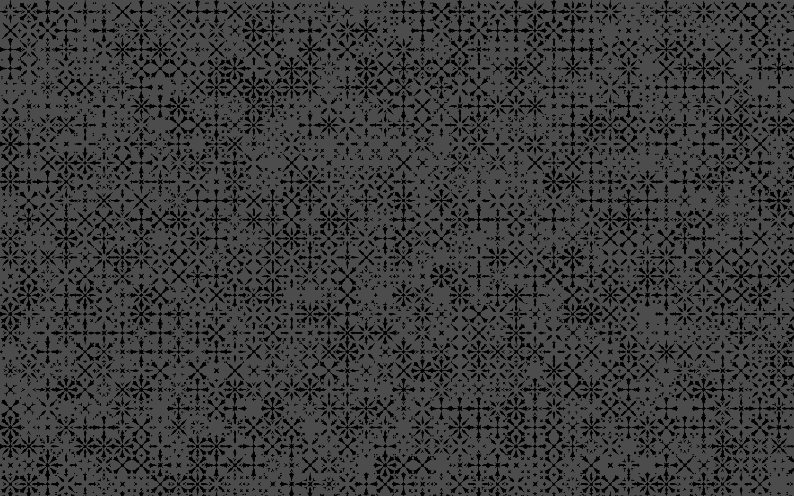

우리는 문화에 대한 이해와 시각언어를 정교히 구사할 수 있는 능력을 갖추고, 이를 통해 세상을 풍요롭게 만드는 방법을 연구하는 집단이다. 우리는 인간을 존중하고, 매체와 기술은 인간을 위해 존재함을 알며, 시각 언어는 인간의 자유 의지에 따라 형성됨을 믿는다. 우리는 개인의 다양성을 추구하고, 모두에게 열린 지식을 만들며, 디자인 사회의 공동체 형성에 일조한다. 우리는 정당한 권위는 존중하되 폭력적 권위주의에 굴복하지 않으며, 건전한 전통은 이어가되 낡은 전통주의는 타파한다. 우리는 시각 언어를 통한 소통이 인간의 생각을 바꾸는 가장 강력한 힘이라는 사실을 아는 사람들이다. 그리고 우리는 세상을 바꾸기 위해 이곳에 모였다.
We, as designers, cultivate the art of exquisite visual language, and use our ability to make the world richer than ever. We respect humanity—which media and technology exist for. We believe in visual language that is built by free will of and for everyone. We encourage individual diversity. We create knowledge for all. We aim to foster a universal design community. We honor rightful authority, but not misused authority; inherit noble traditions, and not old conventions. We are the people who realize that visual communication is the most powerful vehicle to change the way we think. And we just might change the world.
© 2013 Kookmin University Visual Communication Design
